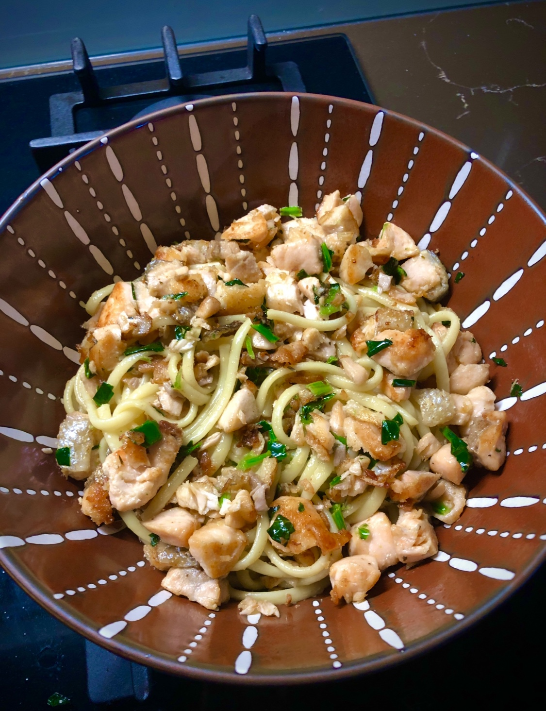

Salmon Linguine

Description
This salmon linguine is a custom dish prepared by Ashlee as an easier home-made version of her esteemed seafood linguine.
There is a small amount of prep-work required, but it's realistically something you could make on a weeknight.
Ingredients
- 4 Salmon Fillets (Medium-Sized)
- Linguine Pasta (250g)
- Garlic Butter (30g)
- Frozen Spinach (30g)
- Salt, Olive oil
Steps
- Begin boiling water for pasta.
- Chop up all salmon fillets into ideally equal bite-size chunks, keeping the skin on.
- Begin cooking linguine pasta in pot with boiling water, adding salt and olive oil to prevent sticking.
- Ensure movement of pasta in water to allow for even cooking.
- Begin frying up salmon in a frypan with some olive oil and salt well.
- Continue frying up salmon until a good crust has formed. Ensure skin is crisp.
- Drain pasta water and then add cooked pasta into the salmon pan with garlic butter.
- As butter begins to melt add in frozen spinach, mix, and continue to cook until spinach thaws.
- Serve up portions into a suitable plate or bowl.
Return to Top | Return to Home Page